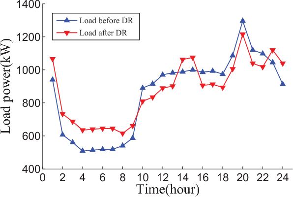
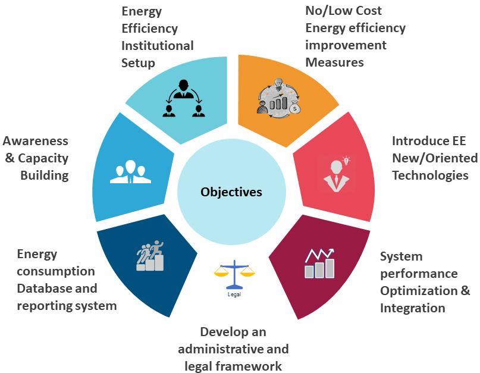

My Notes
Industrial Decarbonization:
Decarbonization has become popular in recent years among heavy energy users like manufacturing plants, hospitals, corporate spaces, and the district heating sector. Industrial-level decarbonization is carried out by targeting heavy emission users like boilers, steam generators, and increasing energy efficiency by retrofitting these users. This is done in an Energy Performance Contract (EPC) where the EPC organization carries out auditing, designing, commissioning, and sometimes operations to increase energy efficiency for their client.
The energy efficiency can be increased by looking at major energy-consuming entities like:
- Heating and Cooling
- Air Handling Units
- Lighting
These services can be upgraded in any infrastructure to efficient options to reduce the overall energy consumption and emissions of any organization. This is done by first conducting an Energy audit where all the facility/infrastructure is analyzed and the energy consumption users (boilers, heating apparatus, cooling units, AHUs, lighting), structural features (location of each user, location of energy center plant), and other important aspects of the facility like energy bills, water bills are documented.
Then, the best possible and financially economical energy-efficient options are designed by the contractor for the client. This includes energy modeling and technical calculations related to HVAC, solar, electricity. These options may involve a complete replacement of the heating and cooling users, like boiler and chiller replacement, or just upgrading the system to reduce the load. Once the best solution is finalized by the client, the contractor then deploys the plan and commissions the energy efficiency measures.
A typical decarbonization project has the following aspects:
Energy Performance Contracts (EPCs):
- EPCs serve as the framework for energy efficiency initiatives.
- They involve thorough auditing, designing, commissioning, and sometimes operating energy systems to optimize efficiency.
- EPC organizations take responsibility for delivering energy savings, often guaranteeing performance improvements to clients.
Energy Consumption Analysis:
A comprehensive energy audit is conducted to identify major energy-consuming entities within the infrastructure. This includes boilers, heating apparatus, cooling units, air handling units (AHUs), and lighting installations. Structural features like the layout of energy centers and distribution of the equipment are also studied. Energy analysis is carried out by recording data either using BMS or using flow and temperature loggers and building a load profile to analyse the consumption of a particular energy user. Maximum and minimum energy demand are taken into consideration when it comes to retrofitting or intalling a new system.
 Example of a Load Profile: This is basically a graph representing KW unit of electricity over time for any appliance/ energy user. Above picture is a simple representation but a load profile may have several other features depending on the depth of the energy usage investigation.
Design Phase:
Energy-efficient solutions are designed based on audit findings and client requirements. HVAC systems, solar energy utilization, and electrical engineering considerations are factored into the designing of new or retrofit system. Engineers usually target heavy load users like heat pumps/ boilers/ chillers which are easy wins in any EPC.
Project Commissioning:
Project commissioning is either carried out by the EPC or the EPC firm hires a contractor for installation and comissioning. However installation and comissioning operations are carried out under the monitoring and in collaboration with the EPC company. Project management plays a critical role in installation and comissioning phase of the EPC.
Monitoring and Optimization:
Post comissioning, ongoing monitoring and optimization efforts are crucial. BMS or SCADA is usually installed for monitoring and control of the facility. Continuous monitoring helps identify deviations from expected performance and allows for timely adjustments. Optimization efforts aim to maximize energy savings and ensure long-term efficiency gains.
Impact and Sustainability:
Industrial decarbonization through EPCs contributes significantly to reducing emissions and promoting sustainability. By optimizing energy efficiency in heavy energy-consuming sectors, these initiatives play a vital role in achieving environmental goals and sustainable development goals. At present, UN's SDG's have pushed organizations and corporates across the globe to decarbonize and take energy efficiency measures to reduce their carbon foot print on enviornment. Increasing carbon taxes, net zero ambitions and enviornmental norms, have made decarbonization inevitable to corporates in the coming future. Which makes decarbonizationa very important topic in the coming decade.
